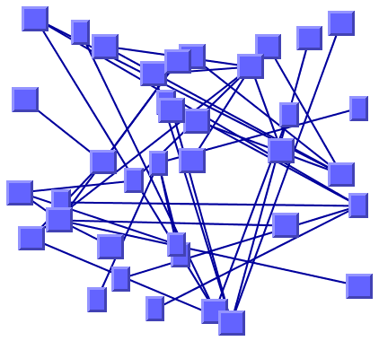

IBM
ILOG Elixir Enterprise
V3.0 3.0
>
Using graph layout algorithms
>
Layout algorithms
>
Random layout (RL)
>
RL sample
INDEX
|
PREVIOUS
NEXT
RL sample
The following figure shows a sample drawing produced with the Random Layout (RL).

Graph drawing produced with the Random Layout
What types of graphs suit the RL?
Any type of graph:
connected graphs and disconnected graphs
planar graphs and nonplanar graphs
Current section
Random layout (RL)